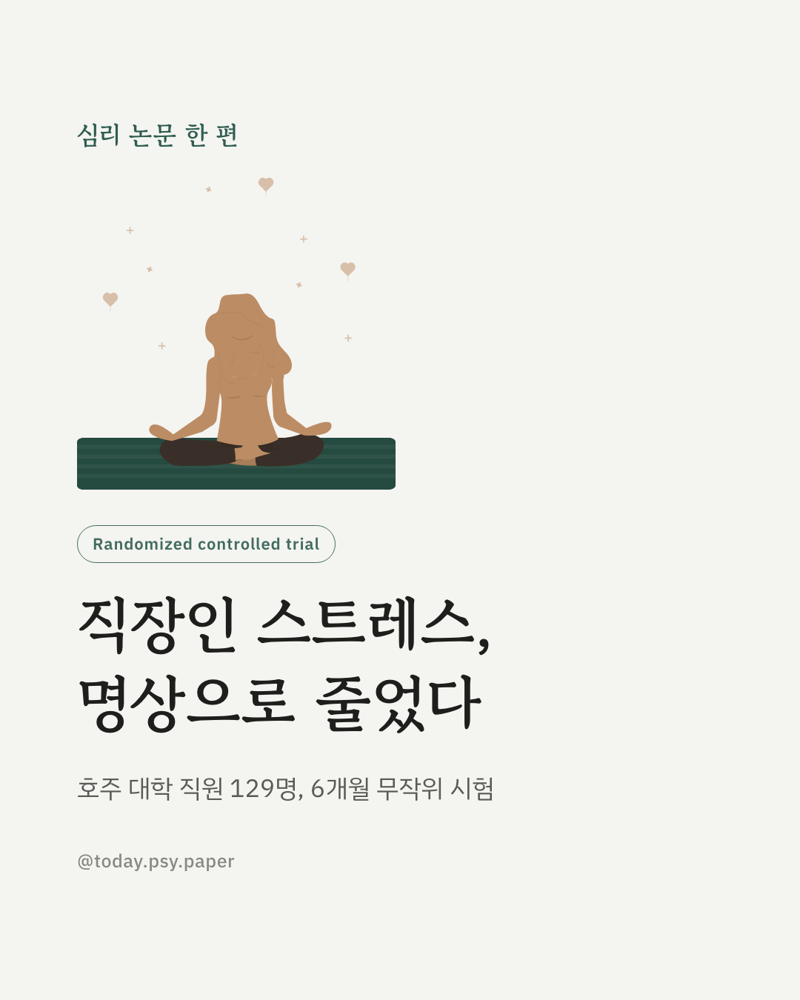
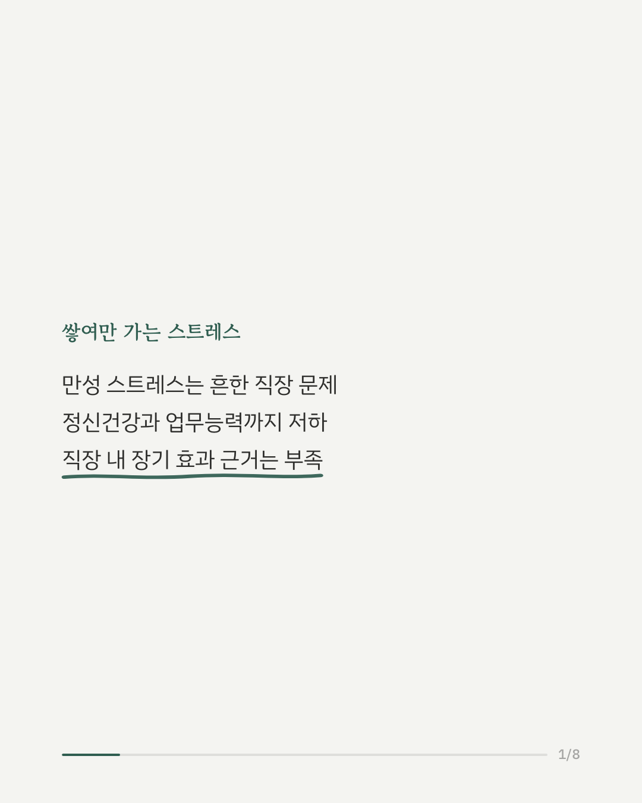
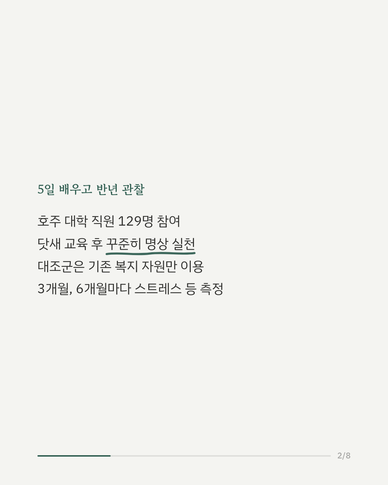
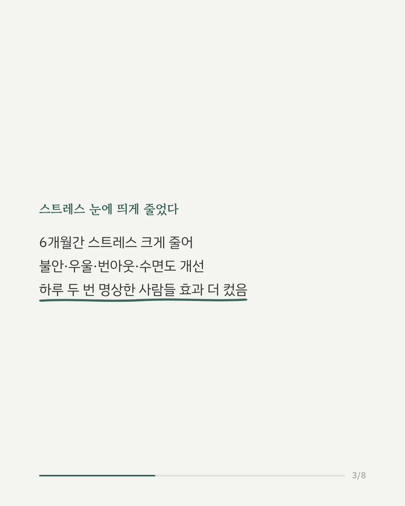
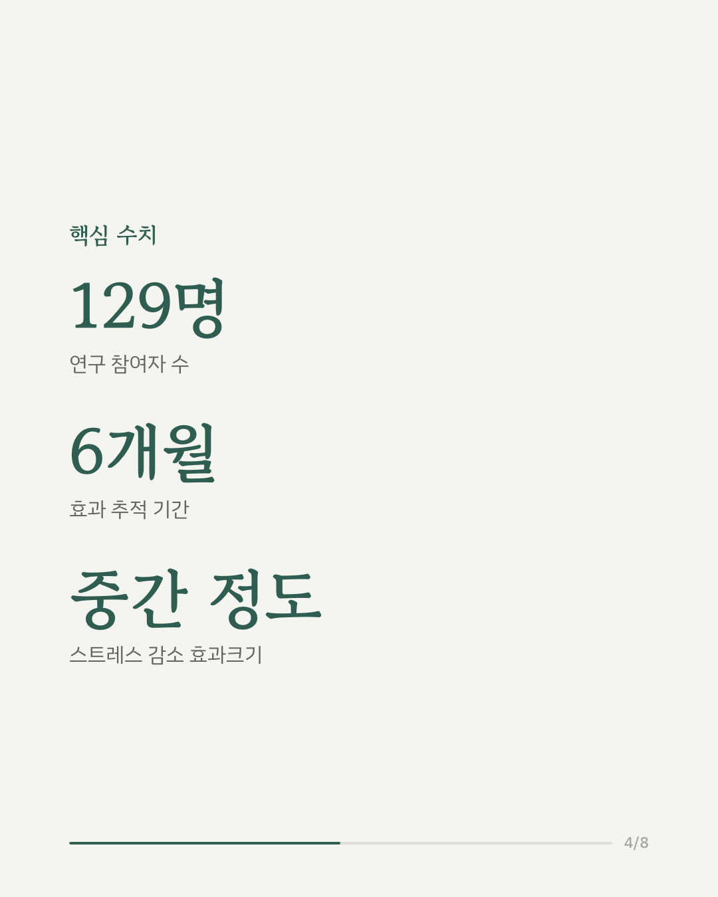
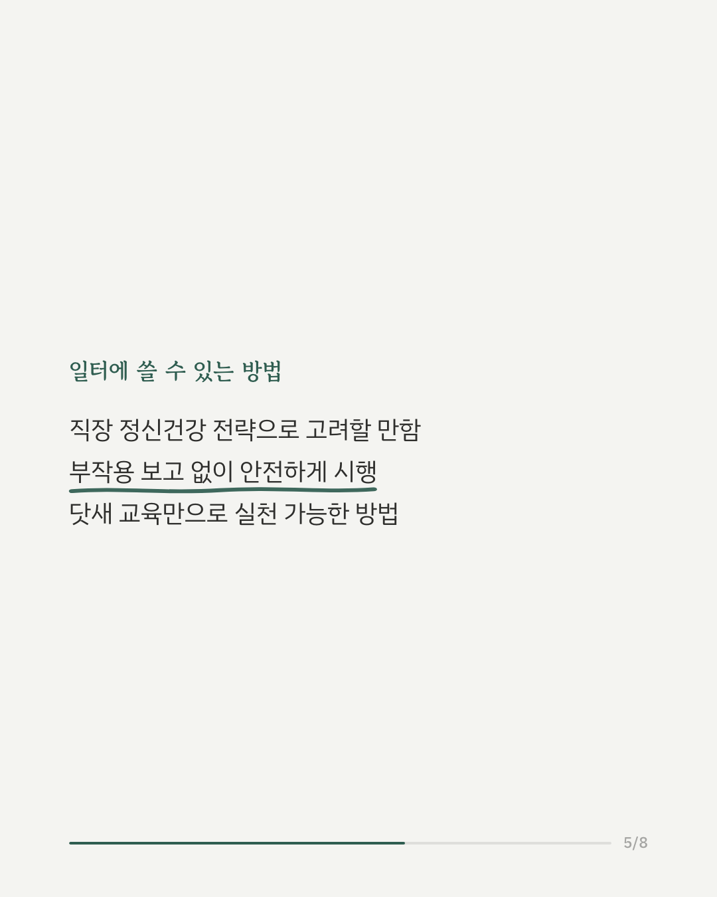
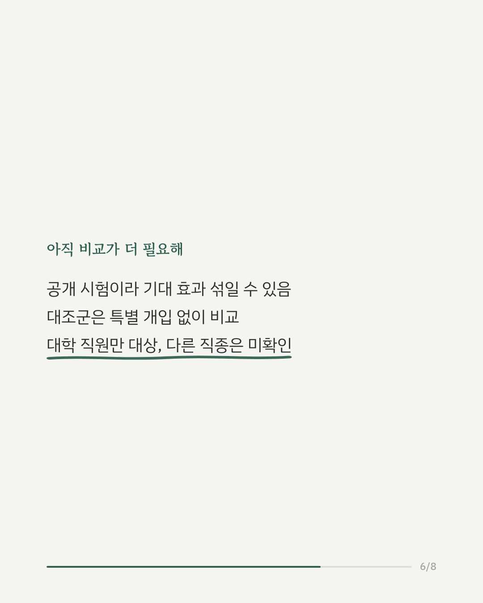
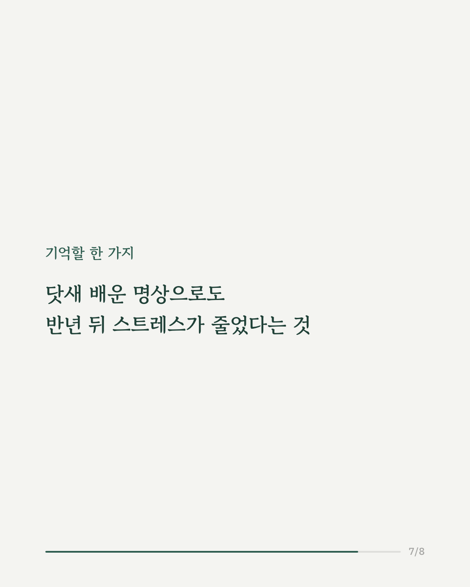
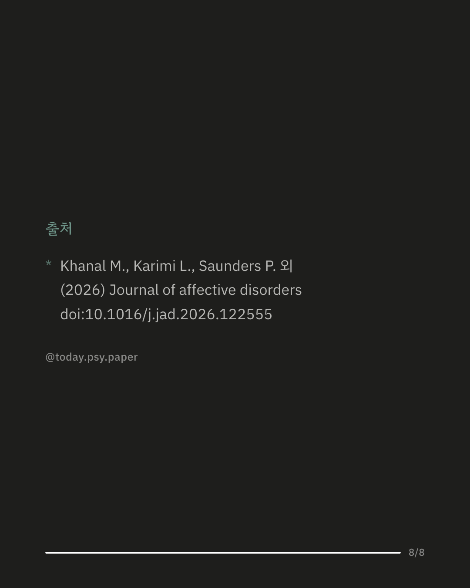

만성적인 스트레스는 정신건강과 업무 능력에 나쁜 영향을 미치는 흔한 문제입니다. 초월 명상(Transcendental Meditation)이 스트레스를 줄여줄 수 있다는 이야기는 많았지만, 직장에서 장기간 효과를 검증한 연구는 많지 않았습니다. 호주의 한 대학교 직원 129명을 대상으로, 닷새간 명상 교육을 받고 이후 꾸준히 연습한 그룹과 기존 복지 자원만 이용한 그룹을 6개월간 비교하는 무작위 대조 시험이 진행됐습니다. 결과는 뚜렷했습니다. 명상을 배운 그룹은 6개월 동안 스트레스가 확실히 줄었고, 그 정도는 통계적으로 중간 수준의 효과였습니다. 불안, 우울, 번아웃, 수면 문제도 함께 개선됐고, 삶의 질과 전반적인 웰빙 지표도 나아졌습니다. 특히 하루 두 번 명상을 실천한 사람들에게서 개선 효과가 더 크게 나타났고, 부작용은 보고되지 않았습니다. 이 결과는 초월 명상이 안전하고 효과적인 직장 내 정신건강 관리법으로 고려될 수 있음을 보여줍니다. 다만 이 연구는 참가자와 연구자 모두 배정 결과를 알 수 있는 공개 시험이었고, 대상이 한 대학교 직원으로 한정돼 다른 직종에도 적용되는지는 추가 확인이 필요합니다. 출처: Journal of Affective Disorders (2026), 'Effects of transcendental meditation on mental health and work productivity among university staff in Australia: A randomised controlled trial' #직장인스트레스 #명상효과 #정신건강정보 #심리학연구
python3 publish.py 42778032